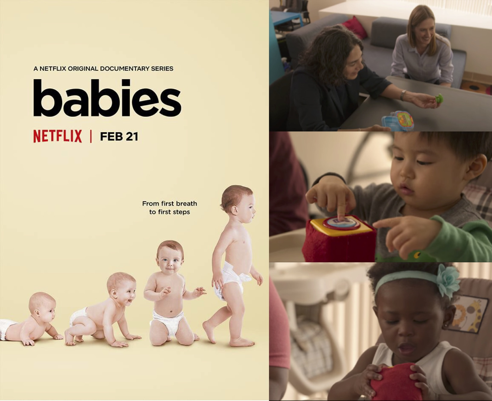

Yale News: Need a landing pad for helicopter parenting? Frame tasks as learning Mike Cummings, 11.22.24.
BOLD: The cognitive scientist helping kids persist through challenges. Annie Brookman-Byrne, 9.5.24.
BOLD: How can schools embrace variability in learning? Nina Alonso, 4.2.24.
The Happiness Lab Podcast: Happier Parents, Happier Kids Pt 2: Letting Children Try and Fail. Laurie Santos, 11.7.22
The Stanford Psychology Podcast: Julia Leonard: Young children's effort allocation and persistence in learning. 11.3.22
New York Times: Want Your Kid to Learn Something New? Sign Yourself Up, Too. Tom Vanderbilt, 4.20.21
CNN: Parents: Here's when to shower your child with praise Sandee LaMotte, 11,14.21
Penn Today: Children Persist Less When Adults Take Over Michele W. Berger, 1.27.21; Parental praise associated with longer toddler toothbrushing, a barometer of persistence Michele W. Berger, 11.14.21
Parents.com: Kids Persevere More When Parents Take a Step Back, New Study Shows Anna Halkidis, 2.5.21
The Atlantic: Infants Can Learn the Value of Perseverance by Watching Adults Ed Yong, 9.21.17
Scientific American: If at First You Don't Succeed, Show Your Baby Again Yasemin Saplakoglu, 9.21.17
MIT News: Babies Can Learn that Hard Work Pays off Anne Trafton, 9.21.17
Netflix: The Leonard, Lee, & Schulz 2017 study was featured in the Babies documentary on Netflix! (Season 2, Episode 6)

This study was also featured on the MIT homepage and the top of reddit!
Psychology Today: How AI Could Ruin or Revive Our Culture of Learning Julia Leonard & Brett Smith, 8.29.23
Character Lab Tip of the Week: Step back: Let kids do it themselves Julia Leonard, 5.5.21
* This piece was also featured in Ed Week
The Conversation: Babies can learn the value of persistence by watching grownups stick with a challenge Julia A. Leonard, 9.21.17
* This piece was also featured in Smithsonian Magazine,
Salon, and on former Vice President Joe Biden's podcast,
Biden's Briefing episode #69
An interview I did for MindCORE, Penn's integrative hub for the study of the mind, here
An interview I did with MIT's integrative learning initiative here
I wrote about my work in graduate school for the MIT School of Science Newsletter here